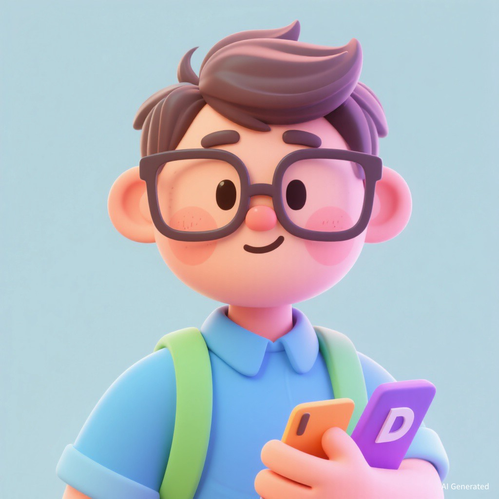

Rey Dwan
热衷于构建高性能、高颜值的现代 Web 应用程序。专注于前端工程化、UI/UX 动效设计以及开源生态建设。
1+
Gitee 仓库数
5+
总提交次数
2018
加入年份
技术栈
JavaScript / TypeScript
Vue.js (Vue 2 & 3)
React / Next.js
Node.js / Express
Vite / Webpack / Gulp
Element-Plus / Ant Design
HTML5 / CSS3 / SCSS
Electron / 桌面端
UI / UX 动效设计